Deciding to be cheap and book 5 hour bus rides instead of 1 hour flights, I was of course served up 7 hour bus rides, hour long waits at immigration, and a sore back. Make no mistake, though, my suffering was mostly due to the fact that I am an impatient weakling... But still, would not repeat that again over a weekend trip.
The most redeeming highlight of my two days there was definitely the Batu caves. The golden Lord Murugan statue, monkey-lined stairs, and limestone interior were sights to behold.
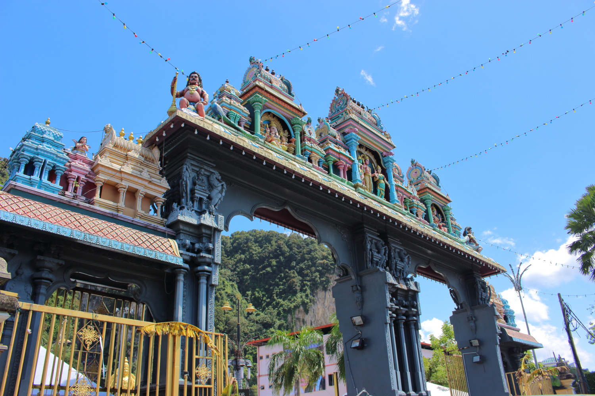 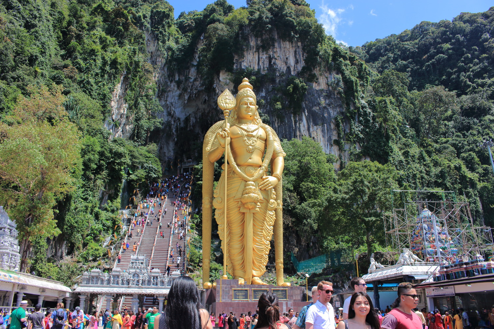 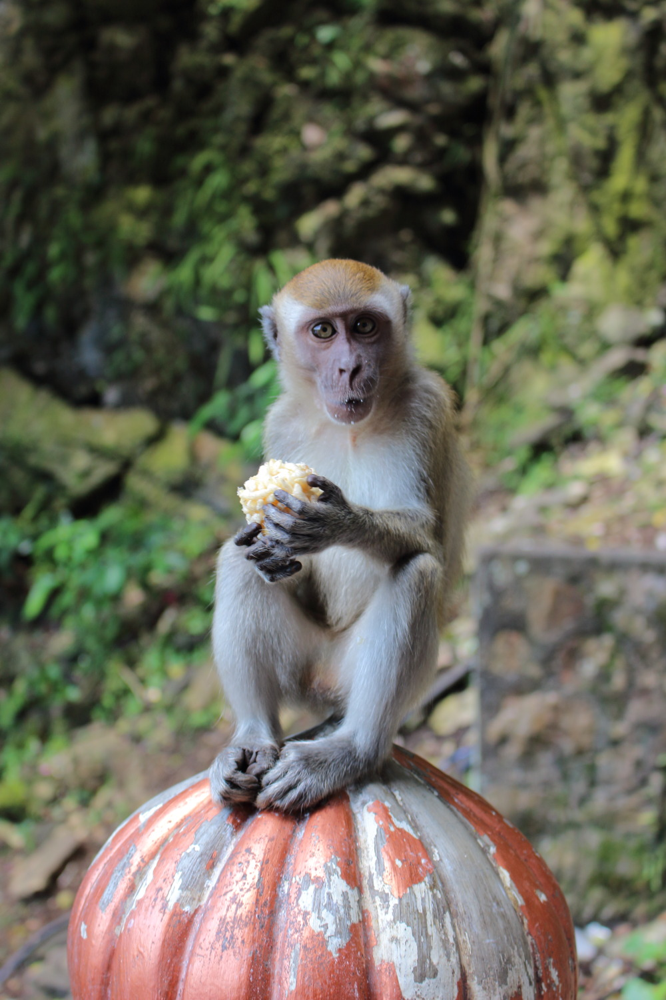I unfortunately know little about Hinduism and the shrines in Temple Cave, but it felt good to observe people paying respects.
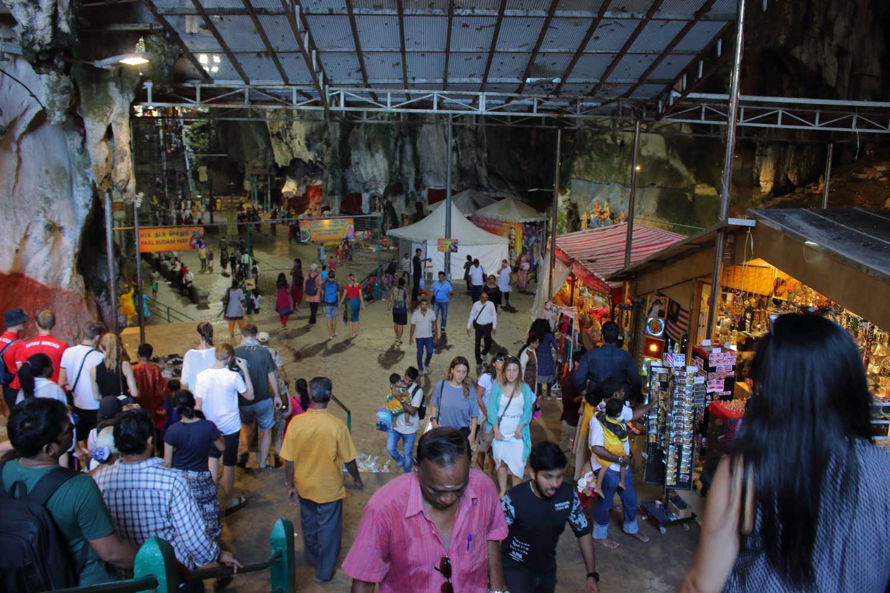 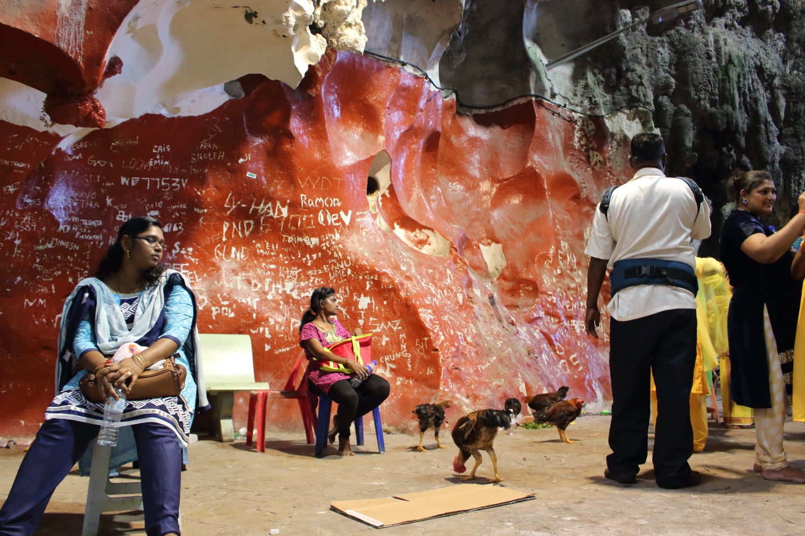My greatest awe is directed to the beautiful limestone stalactites: tall giants with green coral fingers and lips, hugging the day with cool air.
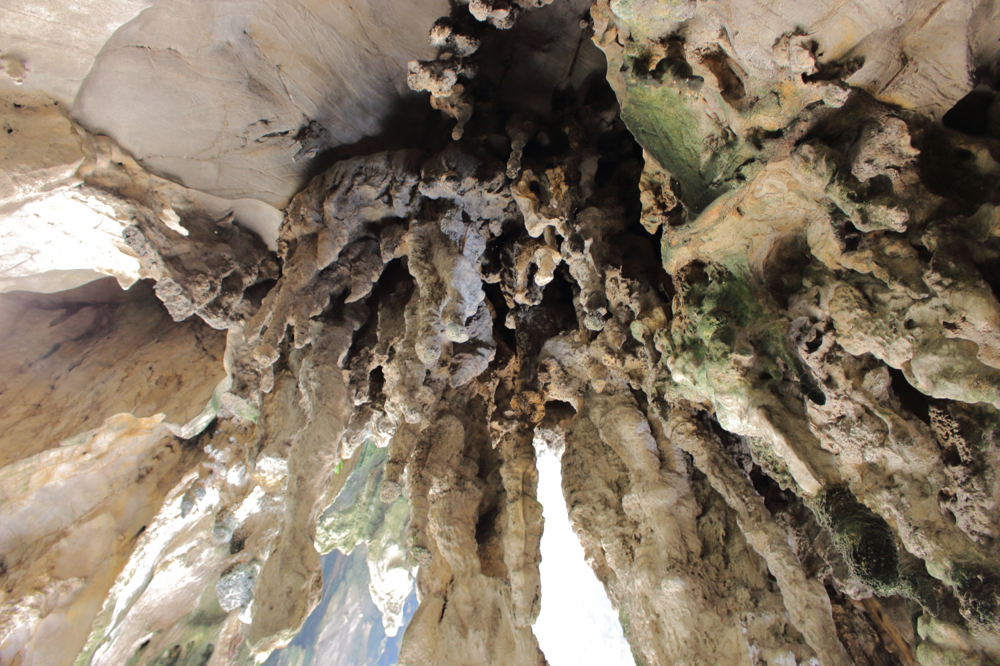 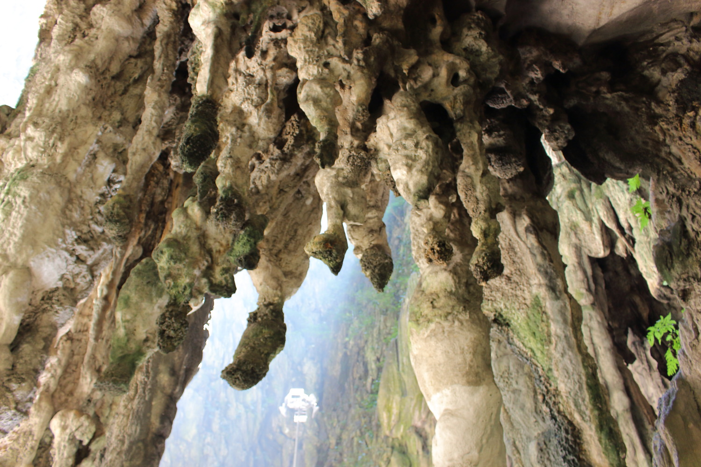 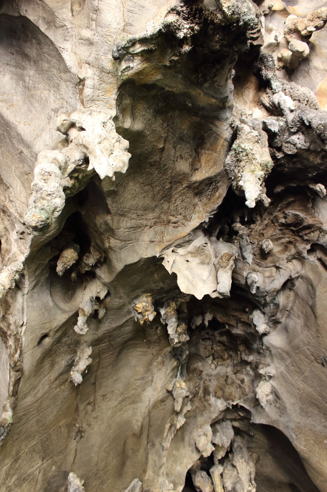 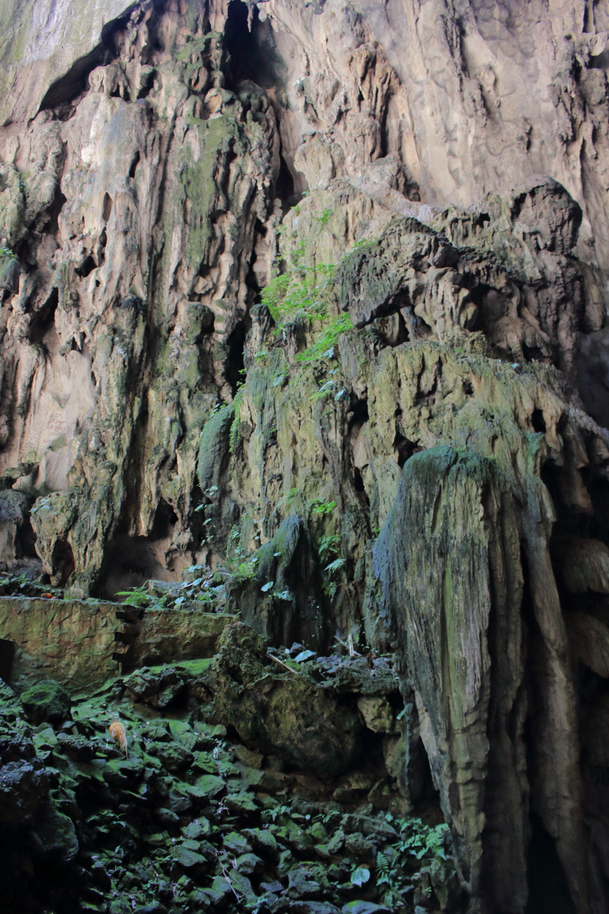 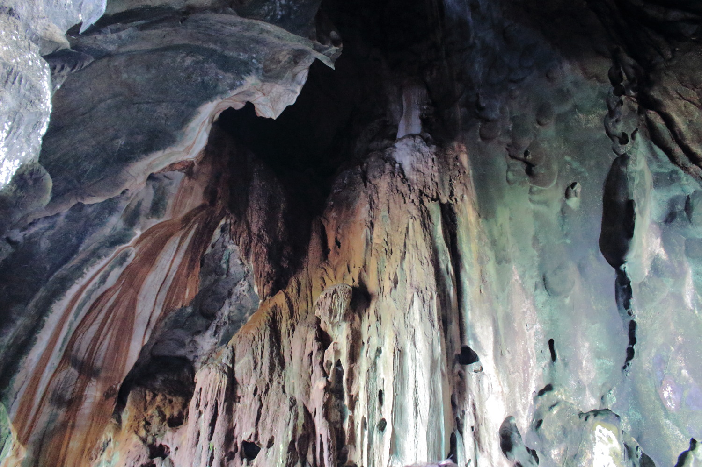Lastly, this week's episode of Asia's Next Top Models features Dayeon, Jenn, and unamed child who crashed our photoshoot and demanded to be casted.
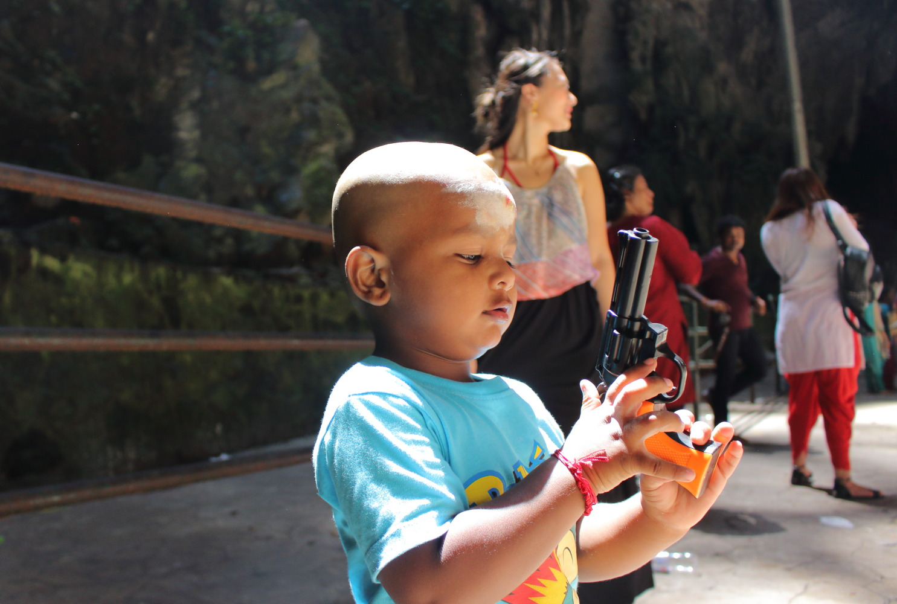